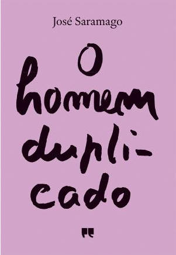
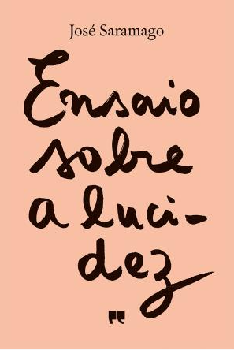
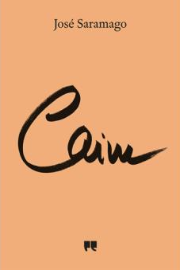
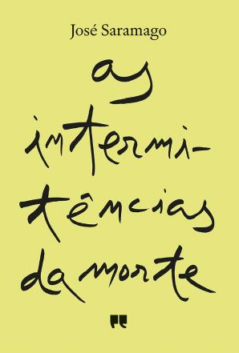
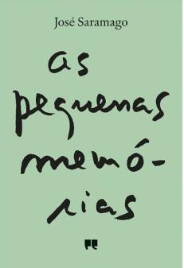
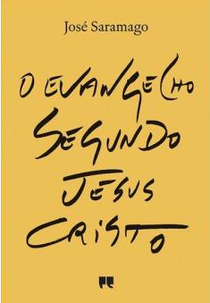
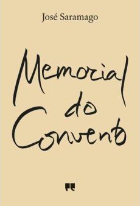

Na seguinte tabela encontra-se as 10 obras mais importanres e conhecidas do escritor José Saramago
| Título das obras | Ano das obras | ||
|---|---|---|---|
| Ensaio sobre a cegueira | 2008 | ||
| O homem duplicado | 2013 | ||
|  | |||
| Ensaio sobre a lucidez | 2004 | ||
|  | |||
| Caim | 2009 | ||
|  | |||
| As intermitências da morte | 2005 | ||
|  | |||
| As pequenas memórias | 2006 | ||
|  | |||
| Claraboia | 2011 | ||
| O evangelho segundo Jesus Cristo | 1991 | ||
|  | |||
| Memorial do convento | 1982 | ||
|  | |||
| Alabardas, alabardas | 2014 | ||